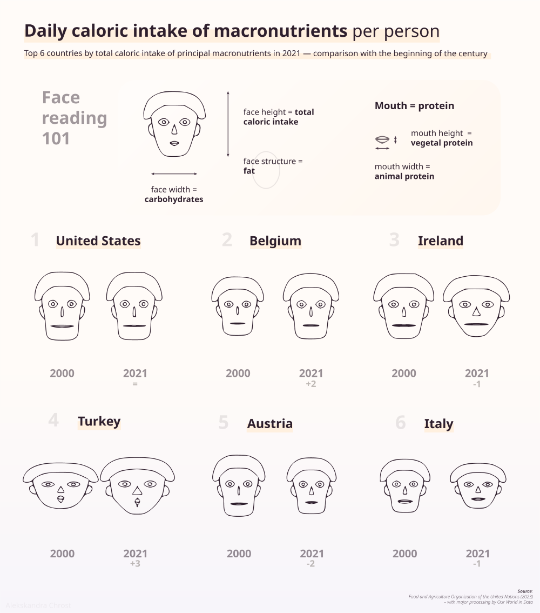

One of the very first things that inspired me to have a greater interest in visualizing data was learning of a method to do just that using human faces.
Imagine displaying your data in the form of caricatured images, where the width of the mouth represents one parameter and the space between the eyes another. Such an interesting idea — making your variables correspond to a set of facial features.
While it may sound strange, the idea behind Chernoff faces is pretty straightforward. Generally, humans are somewhat predisposed to recognize facial features (and similarities between them) easily, which can be translated to their likenesses in analysis and can serve to guide the viewer to some conclusions at a glance.
This visualization was made using R code and Adobe Illustrator.
View the R code here
Using R for this analysis was inspired by this post by Nathan Yau at Flowing Data.